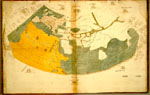

Claudius Ptolemaeus, Geographia. [Alleen de kaarten.] Grieks. Handschrift op papier, 50 ff., 545 x 425 mm. Italië, eerste helft van de zestiende eeuw. -- (VGF 1)
De naam van de mathematicus, astronoom en geograaf Claudius Ptolemaeus (85-164) is verbonden met Alexandrië, lange tijd de metropool van de Griekse wetenschap. Daar schreef hij zijn vermaarde handleiding voor het vervaardigen van geografische kaarten, waaraan was toegevoegd een opgave van de ligging van circa achtduizend plaatsen naar coördinaatpunten. Op basis daarvan was het mogelijk een atlas te vervaardigen. Vermoedelijk leidde de ontdekking van een Grieks handschrift van dit werk, de Geographia, in het dertiende-eeuwse Byzantium tot de kaarten die bekend zouden worden als de Atlas van Ptolemaeus. Het Leidse handschrift bevat zevenentwintig kaarten en is naar alle waarschijnlijkheid een indirecte kopie van het oudste bekende handschrift, dat thans in het Vaticaan berust onder de signatuur Urbin. Gr. 82.
De wereldkaart op folia 1v-2r geeft de drie, door verschillende inkleuring onderscheiden werelddelen met de Atlantische en de Indische Oceaan. De laatste is aan de zuidrand nog afgesloten. Slordige inkleuring had tot gevolg dat de grote eilanden in de Middellandse Zee werden overschilderd. De ondertekening schijnt echter nog door de blauwe verf heen. De cartografische prestatie is er echter niet minder om. Gebergten en rivieren zijn duidelijk gemarkeerd. Opmerkelijk is hoezeer de bevaren kustranden met de werkelijkheid overeenstemmen.
De kaart is gebaseerd op een indeling in honderdtachtig breedtegraden; het noordelijk halfrond is konisch voorgesteld, waarbij de top met de Noordpool samenvalt. Het vrijwel onbekende zuidelijk halfrond vroeg, om te grote vertekening te vermijden, om een tegengestelde kegelprojectie. Vandaar de knik in de meridianen op de evenaar. De oriëntatie van de kaart wordt in de marge nog eens aangegeven door de afbeeldingen van windrichtingen. Aan de oostelijke zoom zijn bovendien de twaalf sterrenbeelden in de gebruikelijke volgorde afgebeeld; die plaats is begrijpelijk, omdat de sterrenbeelden immers aan de oostelijke horizon verschijnen.
Literatuur
- K.A. de Meyïer, Codices Vossiani Graeci et Miscellanei. Lugduni Batavorum 1955 ( = Bibliotheca Universitatis Leidensis, Codices manuscripti. VI), p. 1-2.
- M. Destombes, Mappemondes A.D. 1200-1500. Catalogue préparé par la Commission des Cartes Anciennes de l’Union Géographique Internationale. Amsterdam 1964 (= Monumenta cartographica vetustioris aevi. Vol. I), p. 247.
| vorige pagina | top pagina |